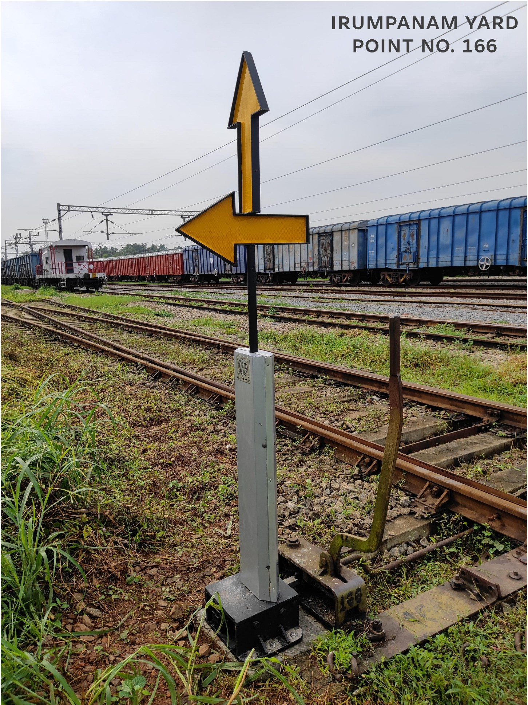
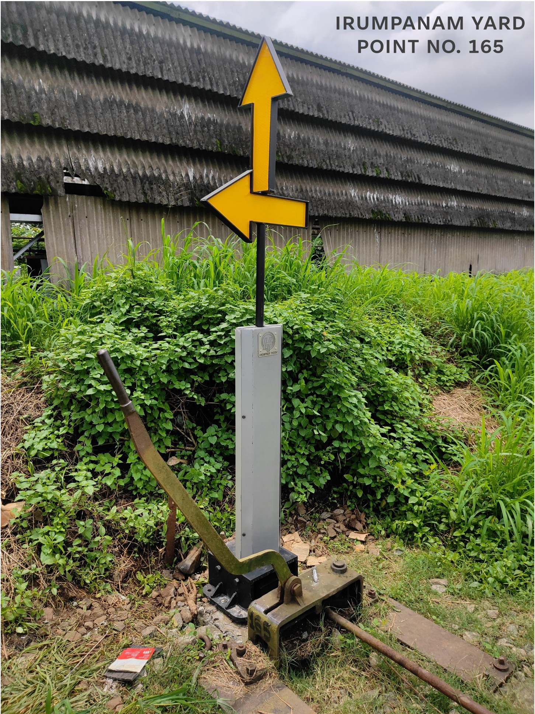
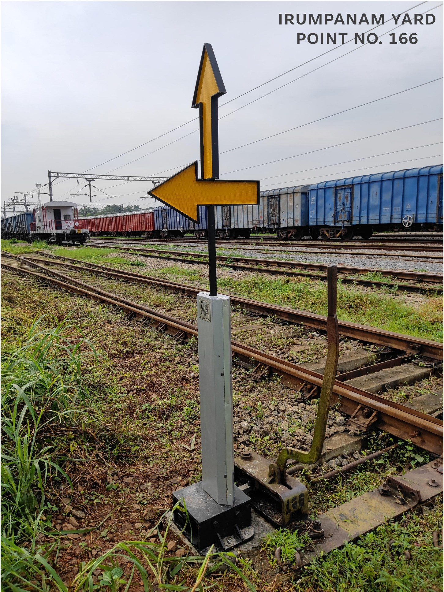
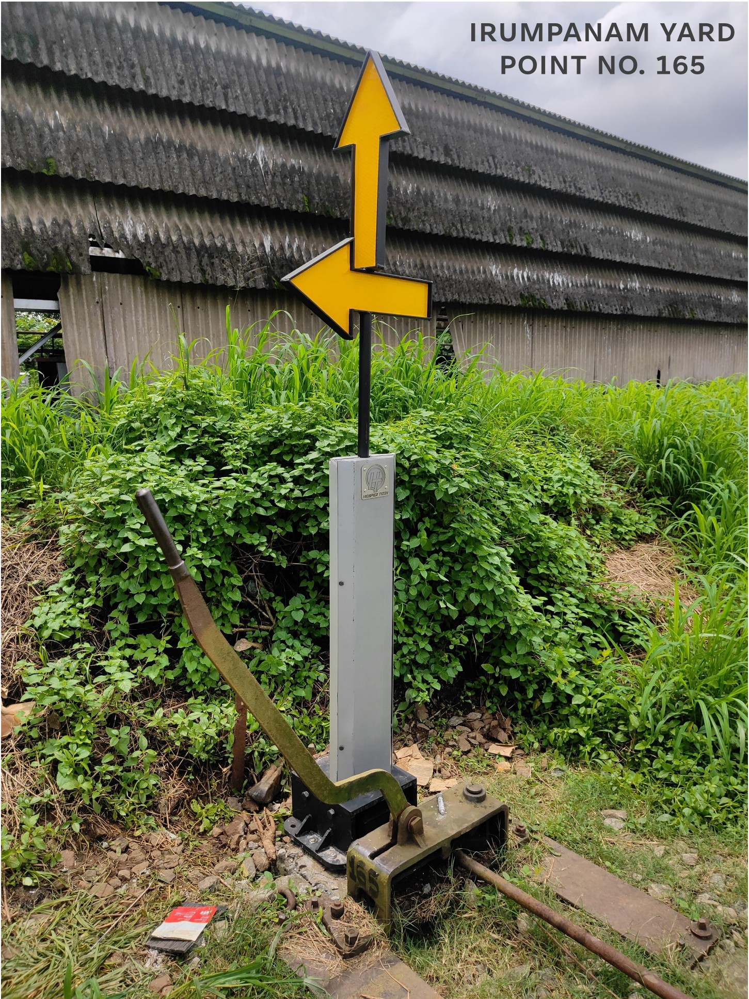
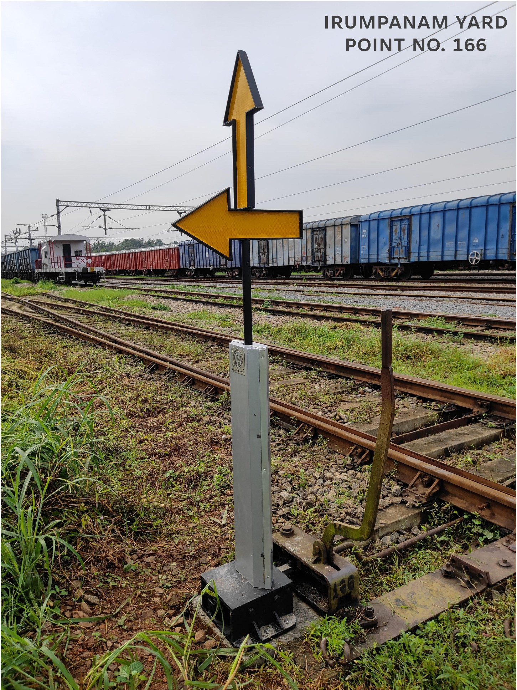
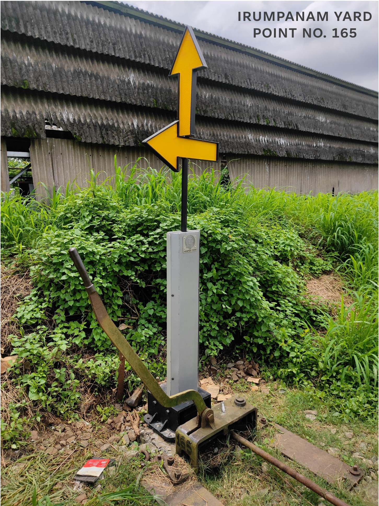
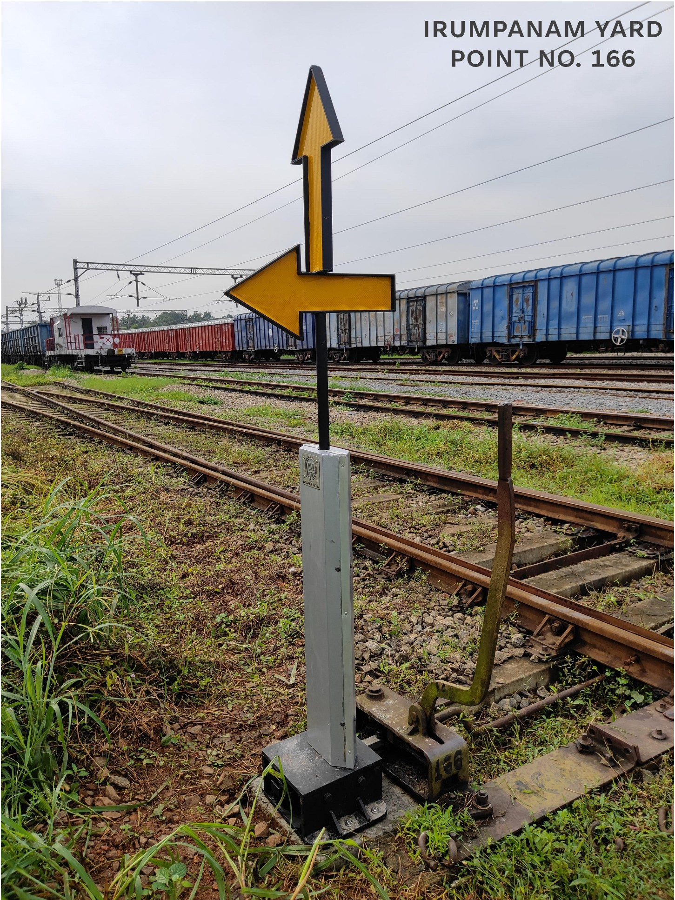
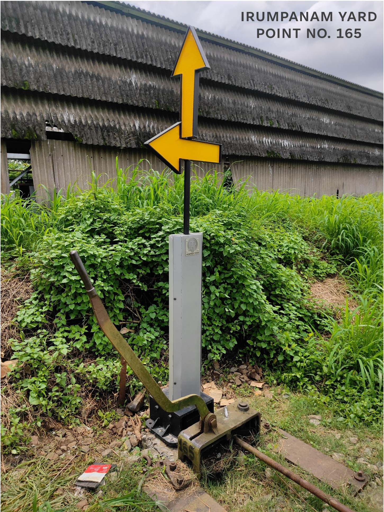

Project Gallery
 



 



This case study highlights the power of hands-on collaboration in solving a pressing operational challenge on the ground. When the Divisional Railway Manager (DRM) of Thiruvananthapuram Division raised a safety concern regarding manual track switching in non-interlocked yards, Hesper Tech Pvt. Ltd. was brought in to explore a practical solution. What followed was a focused and fruitful partnership that resulted in the design, testing, and deployment of a fully mechanical point indication system—improving visibility, reducing risk, and strengthening trust between public and private sectors.
In non-interlocked yards like Irumpanam, manual point switching is routine. However, the absence of a visual feedback mechanism left loco pilots and ground staff relying on verbal confirmation or physical inspection to determine the direction of the switched track. This led to frequent delays, misrouted movements, and heightened safety risks—particularly during low visibility conditions. The DRM recognized this as a significant operational gap and approached Hesper Tech to develop a system that could be implemented quickly and maintained with ease.
Hesper Tech proposed a fully mechanical, low-maintenance system that would work seamlessly alongside existing railway infrastructure. The key requirements were:
A prototype of the Mechanical Point Indicator was built and tested at Trivandrum Central Yard. The device used a directional arrow mechanically linked to the point switch lever, ensuring that the indicator accurately reflected the live track position at all times.
Following successful trials and refinements at Trivandrum Central, two additional units were deployed for field validation at Marshall Yard and Nagercoil Junction Station. Feedback from ground teams affirmed the product’s reliability and ease of use. With these results, Southern Railway approved the installation of nine more indicators at Irumpanam Yard. Hesper Tech carried out the design, in-house fabrication, and installation of all twelve units delivered so far.
This project stands as a clear example of how collaborative thinking and rapid, on-site development can address real-world challenges in railway operations. Initiated by a need identified directly by Southern Railway’s leadership and executed by Hesper Tech with precision, the Mechanical Point Indicator solution has delivered measurable improvements in safety and operational clarity. With growing interest and continued support, further deployments are anticipated across other non-interlocked yards.